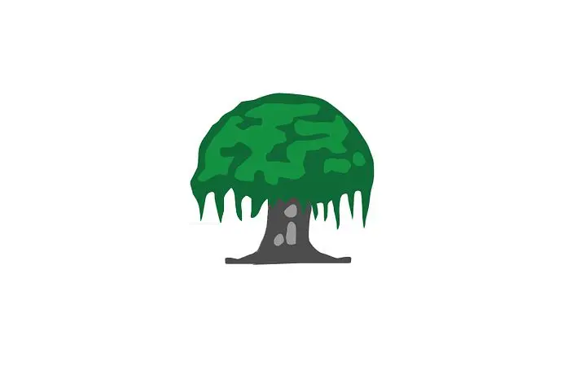
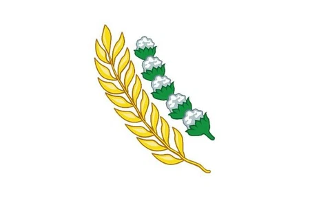

Ketuhanan Yang Maha Esa
Makna:
- Pengakuan keberadaan Tuhan sebagai causa prima
- Kebebasan beragama dan beribadah
- Toleransi antarumat beragama
- Larangan atheisme dan pemaksaan agama
Implementasi:
- Menghormati hari besar keagamaan
- Tidak memaksakan keyakinan
- Membangun tempat ibadah yang rukun
- Saling membantu tanpa membeda-bedakan agama
Kemanusiaan yang Adil dan Beradab
Makna:
- Pengakuan harkat dan martabat manusia
- Perlindungan HAM
- Kesetaraan di depan hukum
- Menjunjung tinggi nilai-nilai kemanusiaan
Implementasi:
- Menolak diskriminasi dan kekerasan
- Membela kaum yang lemah
- Bersikap sopan dan beradab
- Menghormati hak orang lain

Persatuan Indonesia
Makna:
- Kesatuan bangsa atas keragaman
- Bhinneka Tunggal Ika
- Cinta tanah air dan bangsa
- Menjaga keutuhan NKRI
Implementasi:
- Menghargai perbedaan suku/agama
- Menggunakan produk dalam negeri
- Menjaga persatuan di media sosial
- Menolak separatisme

Kerakyatan yang Dipimpin oleh Hikmat Kebijaksanaan dalam Permusyawaratan/Perwakilan
Makna:
- Kedaulatan di tangan rakyat
- Musyawarah untuk mufakat
- Sistem perwakilan
- Kebijaksanaan dalam mengambil keputusan
Implementasi:
- Berpartisipasi dalam pemilu
- Menyelesaikan masalah dengan musyawarah
- Menghargai hasil voting
- Menerima perbedaan pendapat
Keadilan Sosial bagi Seluruh Rakyat Indonesia
Makna:
- Keseimbangan hak dan kewajiban
- Pemerataan pembangunan
- Perlindungan kaum lemah
- Kesejahteraan umum
Implementasi:
- Bersikap adil dalam bergaul
- Peduli pada kaum miskin
- Mendukung program pemerintah untuk pemerataan
- Melapor jika melihat ketidakadilan
